Conjunto de funcionalidades generales de la plataforma que permiten gestionar la información de los módulos. Independiente de si se contrata uno o varios módulos de gestión, siempre acompañan el “core” de la plataforma.
Te damos algunas recomendaciones que te ayudarán a desarrollar esta experiencia:

Ten presente la duración del curso y programa tus espacios de estudio.

Busca un lugar tranquilo para estudiar y evita las distracciones, esto te ayudará con tus niveles de concentración.

Te sugerimos hacer uso de audífonos.

Este curso cuenta con sistema Closed Caption en los contenidos audiovisuales.
Conoce nuestros botones

Cuando encuentres este icono podrás profundizar en las temáticas abordadas.

Menú
Para conocer las temáticas que vas a explorar haz clic aquí.

Ayuda
Si quieres recordar el uso de los botones haz clic aquí.

Logros
Para conocer tus avances y porcentajes haz clic aquí.

Audio
Cuando encuentres este icono podrás activar la voz en off y escuchar el contenido en caso de que así lo requieras.

Salir
Para salir del curso haz clic aquí.

Si quieres avanzar haz clic aquí.

Para regresar a la pantalla anterior haz clic aquí.
¡Hola, te damos la bienvenida a la Ciudadela Verde M-risk - Grupo EPM!
¡Me contaron que vienes a vivir con nosotros! Para ello es necesario que conozcas la historia, cultura y hábitos de la ciudad para que puedas ambientarte, moverte mucho mejor en la ciudadela y así conseguir tu pase de residencia.
Pasa a la siguiente página para empezar.
Te llevaré por un recorrido a los lugares más importantes de nuestra ciudadela y a medida que vayas aprendiendo de nosotros obtendrás estampillas que te acreditarán como integrante del mundo M-risk. Así podrás recibir las llaves de tu hogar. ¡Vamos!
Comencemos entrando al primer lugar que vamos a recorrer: El museo de historia natural.
Pasa a la siguiente página para continuar
Ciudadela M-risk
Grupo EPM
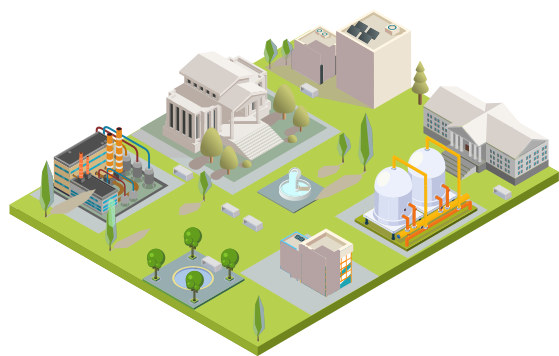
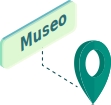
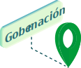

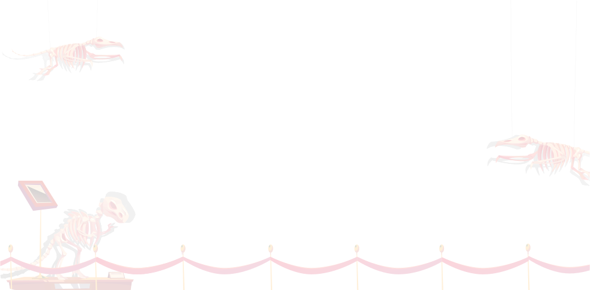
Museo de Historia Natural
Antecedentes de la plataforma M-risk en el Grupo EPM
“Las historias que nos contamos a nosotros mismos, nos definen”, dice Tony
Robbins. Por eso te traje al museo de M-risk, para que sepas un poco de nuestro pasado, cómo
nació M-risk en el Grupo EPM y por qué es importante manejar esta valiosa herramienta.
Hagamos un recorrido por los hitos más importantes desde su formulación hasta su implementación.
Pasa a la siguiente página para continuar.
¿Por qué fue necesario implementar M-risk en el Grupo EPM?
Para disponer de una herramienta tecnológica que permitiera centralizar en una única base de datos confiable la información de los trámites ambientales y sus obligaciones derivadas para todo el Grupo EPM y evitar los riesgos de incumplimiento en compromisos ambientales.
Productos obtenidos este año:
Documento de necesidades y características funcionales mapeadas a nivel de Grupo EPM.
Estudio de mercado con empresas de tecnología potenciales para satisfacer los requerimientos.
¿Qué características debía satisfacer la nueva Plataforma Tecnológica?
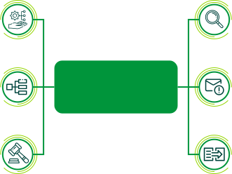
Requerimientos del proceso
Gestión de trámites
Diferentes fases de los proyectos.
Flujos de trabajo en trámites
Controlando los requisitos, documentos y tiempos en cada trámite.
Gestión compromisos legales de los proyectos
Diferentes fases de los proyectos.
Consulta y reportes de tramites y obligaciones
Diferentes criterios búsqueda.
Generación alertas e-mail
Control vencimiento tiempos y obligaciones.
Integración y base normativa
Integración con ENTER.
¿Qué características debía satisfacer la nueva plataforma tecnológica?
Productos obtenidos este año:
- Selección alternativa tecnológica.
- Inicio contrato de prestación de servicios para la implementación.
- Configuración y parametrización de la plataforma a variables de negocio del Grupo EPM.
- Carga de datos histórica al 40%.
Aprendamos más
Consulta este recurso para conocer más información acerca de este componente
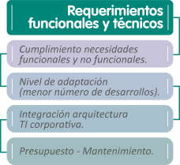
Culminación de la implementación
Durante los primeros tres meses de este año se culminó la implementación de la plataforma en el Grupo EPM, incluyendo la parametrización de la misma y la carga de datos histórica. Se liberó a producción en mayo de 2016.
| Capacitaciones realizadas por dependencias o filiales | Total general |
|---|---|
| Aguas regionales | 73 |
| CENS | |
| CHEC | |
| EDEQ | |
| ESSA | |
| Planeación y operación proyectos aguas | |
| Planeación y operación proyectos gas | |
| Planeación y operación proyectos de generación | |
| Planeación y operación proyectos T&D | |
| Proyectos de generación Ituango | |
| Secretaría general | |
| Gerencia ambiental y social proyectos |
Culminación de la implementación
Productos obtenidos este año:
- Finalización de la carga histórica.
- Plataforma tecnológica parametrizada y lista para usar por el usuario final.
- Usuarios capacitados.
- Administradores de la plataforma definidos para cada dependencia usuaria.
- Equipo del Comité TORESA definido para garantizar la operación y buenas prácticas (actualmente denominado Mesa de trabajo M-risk).
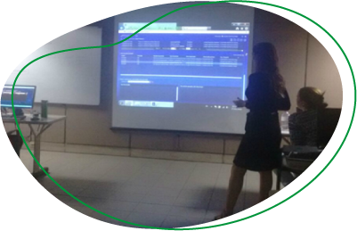
Observa el siguiente video para conocer con más detalle las actividades que se llevaron a cabo en el Proyecto COLEGA Visión Grupo EPM.
Antes de continuar con nuestro recorrido, revisemos si estos antecedentes son claros para ti. ¿Podrías decirme cuáles fueron los factores que motivaron la necesidad de disponer de una herramienta corporativa para la gestión de trámites y compromisos ambientales?
Selecciona la respuesta correcta.
- Que todas las dependencias trabajaran de forma homologada.
- Riesgo de terminación del contrato de estabilidad jurídica, tener alertas y que las autoridades no generaran sancionatorios.
- Riesgo de terminación del contrato de estabilidad jurídica, evitar sanciones y multas, disminuir el riesgo de incumplimientos y hallazgos de auditoría interna.
Herramienta M-risk – Grupo EPM
Ahora que tienes clara la historia y las fases que se llevaron a cabo para disponer de una herramienta tecnológica en el Grupo EPM, que gestionara íntegramente los trámites ambientales y el cumplimiento de obligaciones, te invitamos a conocer las principales características de la plataforma M-risk que actualmente opera en el Grupo EPM.
Esta herramienta debe ser diligenciada por todo servidor que por sus funciones tenga que gestionar actividades relacionadas a la gestión de trámites y compromisos ambientales.
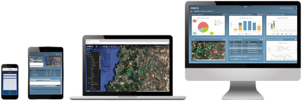
¿Qué es M-risk? (Antes Toresa)
Es una plataforma web propiedad de la compañía chilena M-risk, que funciona en la modalidad de “Software como un Servicio” (SaaS), esto es, un modelo de entrega de software basado en la nube en el que el proveedor desarrolla y mantiene el software, proporciona actualizaciones automáticas del mismo y lo pone a disposición de sus clientes (entre ellos EPM) y se le paga un alquiler mensual. La plataforma es del proveedor.
Si EPM en algún momento decide no continuar con esta suscripción, se le entregan los datos.
Permite la gestión de forma integrada de los temas ambientales y sociales. Desde EPM solo se contrataron los módulos de proyectos, permisos y compromisos, dentro de la "suite" modular que ofrece esta firma.
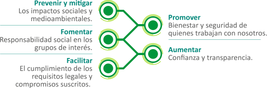
Funcionalidades básicas
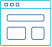
Dashboards, reportes e indicadores personalizados
Biblioteca
Actividades
Avisos automáticos por email
Soporte de especialistas y tutoriales web
webgis para gestión territorial y georeferencia
Máxima seguridad y confiabilidad para su información
Módulos de gestión
Proyecto
Monitoreo

Compromisos
Permisos
Los módulos de gestión son los que tienen la inteligencia del proceso para operar los temas específicos. Para el caso de EPM operan actualmente los módulos de Permisos y Compromisos para gestionar los trámites y obligaciones ambientales derivadas.
Nota: aunque inicialmente fue contratado el módulo de monitoreo, actualmente no contamos con este módulo.
Detalle Módulos Contratados
Hagamos un “zoom in” a los módulos que dispone EPM en la plataforma para conocer qué hacen y qué información requieren.
Pasa a la siguiente página para continuar.
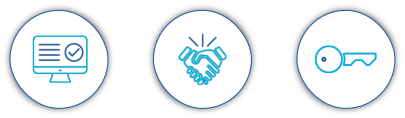

Permisos
Este módulo automatiza la gestión de permisos, licencias y
requisitos mediante actividades y responsables asociados, facilitando el proceso de
obtención, cumplimiento y renovación.
Posee una completa base legal que relaciona
cada permiso con su normativa

Compromisos
Este módulo automatiza los procesos de seguimiento,
verificación y cumplimento de los compromisos adquiridos acordes con la normativa local.
Se gestionan los tiempos, recursos y el avance de las tareas asignadas a cada
responsable.
Monitoreo ambiental
Este módulo permite la sistematización operativa de los
monitoreos y revisión de la información asociada a esta tarea, desde reportes
consolidados hasta los documentos y álbumes relacionados con el monitoreo efectuado.
En él se almacena información genérica de mantención de puntos de monitoreo,
procedimientos o imágenes informativas para quienes quieran interiorizarse de la labor
realizada, implementando procesos de validación de consistencia de datos, para el
aseguramiento de la calidad de la información.
¡HAS CONSEGUIDO TU PRIMER SELLO!
Hemos terminado nuestro recorrido por los antecedentes de M-risk en el Grupo EPM. Ahora tienes un contexto de porqué usamos esta herramienta y puedes continuar conociendo todo lo relacionado con su manejo. Pasa a la siguiente página para conocer otra zona de la ciudadela.
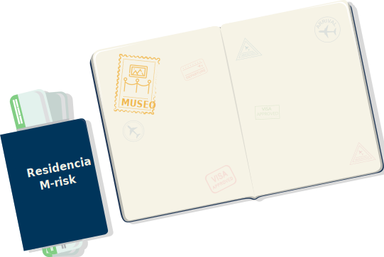
¿Te gustó la visita al museo? ¡Espero que sí! Y que tengas todavía muchas ganas de aprender, porque continuaremos nuestro recorrido con el segundo lugar para visitar: la Gobernación. Pasa a la siguiente página para continuar.
Ciudadela M-risk
Grupo EPM
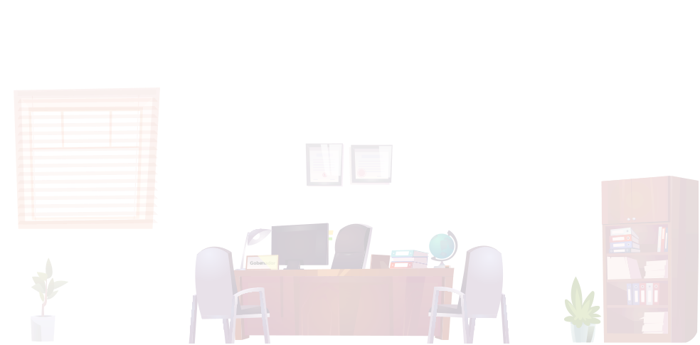
La Gobernación
Generalidades y criterios para la operación de la plataforma M-risk en el Grupo EPM
Hemos llegado a la Gobernación, el ente encargado de la gestión central y donde se definen los criterios de operación de M-risk. Aquí existe un grupo denominado Mesa de trabajo M-risk, conformado por los administradores de la plataforma del Grupo EPM.
Aquí se definen las pautas que garantizan el buen uso, estandarización y organización adecuada de la operación en la plataforma.
Veamos de qué se trata visitando sus instalaciones.
Estrategias definidas por la Mesa de Trabajo M-risk
Hemos llegado al centro de planeación. En esta sala se trabaja en pro de definir estrategias para garantizar la correcta operación de M-risk. Ahora te voy a mostrar un tablero de control muy importante, pues contiene las estrategias que están definidas actualmente. Luego de identificarlo, pasaremos a revisar más a fondo en qué consiste cada una.
Pasa a la siguiente página para continuar.
Mesa de trabajo M-risk
Mesa de trabajo conformada por los administradores de la plataforma para su operación y sostenibilidad.
Administradores plataforma
Persona de cada dependencia de EPM o filial que administra y controla los accesos de usuarios y demás aspectos de la plataforma.
Soporte de mesa de ayuda
Atención permanente de requerimientos a usuarios de la plataforma.
Perfiles de usuario
Tipos de roles.
Documentación y buenas prácticas
Actualmente se cuenta con 2 documentos: Guía para el diligenciamiento y gestión de la información en la plataforma y Guía para la entrega de información entre diferentes fases de los proyectos.
Divulgación y comunicaciones
Buzón administradores plataforma M-risk <dep01980286@epm.com.co> para canalizar las comunicaciones y divulgar criterios y buenas prácticas.
Capacitación permanente
Se tramitará a necesidad con el proveedor por parte de cada administrador.
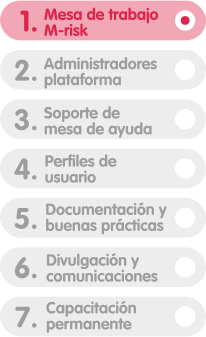
Mesa de trabajo M-risk
Mesa de trabajo para la operación y sostenibilidad de la plataforma.
Veamos más
detalles a continuación:
Oficina de la Mesa de trabajo administradores M-risk
En esta oficina trabajan los administradores de la plataforma M-risk, que es un mecanismo de integración de los administradores de EPM y filiales para definir los criterios y pautas necesarias para garantizar la operación y sostenibilidad de la plataforma.
La Mesa está encargado de establecer estándares para homologar la información a ingresar, canalizar necesidades de capacitación, evaluar requerimientos de mejora del software y documentar las guías de la plataforma. Se reúnen quincenalmente.
También corresponde a la Mesa la responsabilidad de apoyar a través de multiplicadores cada vez que se plantean necesidades de capacitación de una dependencia o filial y analiza casos que lleven los administradores sobre inquietudes en actos administrativos y/u obligaciones de los proyectos, entre otros.
Oficina de la Mesa de trabajo: estructura
Líder: Gerencia A&S Proyectos e Ingeniería
Participantes: Administradores del aplicativo de las diferentes dependencias de EPM y filiales involucradas.
Dependencias y filiales que integran la Mesa de trabajo M-risk:
- Dirección Planeación Generación Energía
- Gerencia Ambiental y Social – VP P e I
- Dirección Amb, Soc y Sostenibilidad Ituango
- Área Gestión Operativa ESSA
- Área Servicios Corporativos CHEC
- Dirección Soporte Legal Ambiental
- Dirección Planeación Aguas y Saneamiento
- Dirección Planeación T&D Energía
- Área Coordinación de Servicios Aguas de Malambo
- Área de Gestión Operativa Aguas Regionales
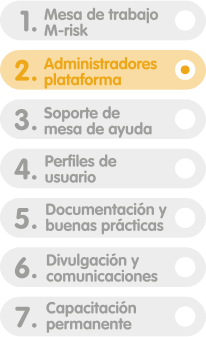
En esta sala se trabaja para controlar la operación de la plataforma. Está a cargo de un grupo de administradores.
Administradores Grupo EPM
Un administrador de cada área filial usuaria.
Veamos más detalles a continuación:
Oficina de la Mesa de trabajo: administradores M-risk
Conozcamos las principales funciones de un administrador que participa en la Mesa de trabajo:
- Administrar los accesos a la plataforma correspondientes a su dependencia según el contrato vigente.
- Realizar seguimiento a la base de datos del software para generar alertas sobre la actualización de la información con los responsables.
- Garantizar la implementación en su dependencia de los estándares para el ingreso de la información, establecidos en la Mesa de trabajo M-risk.
- Asistir a la Mesa de trabajo como representante de sus dependencias.
- Plantear las necesidades de su dependencia en la Mesa, frente a manejo de algún trámite en la plataforma o requerimientos de mejora del software, entre otros.
- Elevar necesidades de capacitación o inquietudes del manejo de información en la plataforma ya sea de índole ambiental o jurídico.
- Participar activamente en la actualización de documentos de criterios de manejo y buenas prácticas de la plataforma.
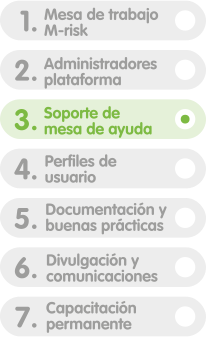
Atención de requerimientos
En esta sala se trabaja en pro de atender las consultas y necesidades de los usuarios, así como los incidentes que se presenten en el uso de la plataforma.
Soporte permanente de la Mesa de ayuda M-risk
Atención de requerimientos de usuarios.

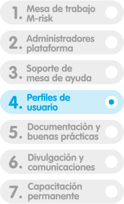
Oficina de perfiles de usuario
Que cada integrante de un equipo tenga un rol aumenta la eficiencia y la seguridad al desarrollar su parte del trabajo. Es vital que cada quien desempeñe un papel con el que sienta que su intervención será productiva y eficaz: no es lo mismo que alguien a quien le da pánico hablar en público tenga el rol de portavoz a que lo desempeñe alguien que sienta comodidad haciéndolo. Por eso existe la oficina de perfiles, para asignar a cada quien el rol que mejor pueda desempeñar.
Pasa a la siguiente página para conocer cuáles son los roles definidos en la plataforma M-risk.Administrador(a):
Es un perfil con capacidad de ver, cargar, editar y eliminar información de los módulos a los que tenga acceso y con la posibilidad de crear, modificar y eliminar información desde el módulo de Administración. Además, puede consultar, editar, eliminar y configurar usuarios e instalaciones, así como otorgar accesos a nuevos usuarios. En general tiene acceso a las opciones de configuración y puede exportar información.
Acceso total:
Es un perfil con capacidad de ver, cargar, editar, eliminar y exportar información de los módulos a los que tenga acceso. Puede tener acceso total en un módulo y tener perfil “Revisor” o “Colaborador” en otros módulos.
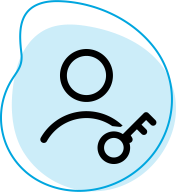
Revisor:
Es un perfil solo con capacidad de ver y exportar información de los módulos a los que tenga acceso. No puede ingresar ni modificar información en los módulos en que tenga configurado este perfil. Puede tener perfil “Revisor” en un módulo y tener perfil “Acceso total” o “Colaborador” en otros módulos.
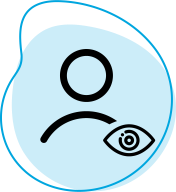
Colaborador:
Es un perfil que solo puede cargar información en los módulos a los que tenga acceso. Solo puede visualizar en la plataforma la información que haya cargado y no puede ingresar ni modificar información en los módulos que tenga configurado este perfil. Puede tener perfil “Colaborador” en un módulo y perfil “Acceso total” o “Revisor” en otros módulos.
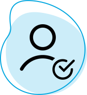
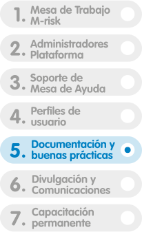
Sala de gestión documental
En esta sala se trabaja en pro de documentar las pautas y directrices que garanticen la gestión de información en la plataforma con principios de calidad, integridad, veracidad y trazabilidad.
Esta Gobernación se caracteriza por su orden y estructura en los procesos que desarrolla y un buen ejemplo de ello es la gestión de documentos que hace para administrar. Por ello, en esta sala se custodian los documentos más valiosos relacionados con la gestión de M-risk.
Documentación de criterios y buenas prácticas
Actualmente se cuenta con 2 documentos: Guía de
diligenciamiento y Guía para el comisionamiento entre fases de los proyectos.
Pasa a la siguiente página para conocer más detalle de estos documentos.
Guía de diligenciamiento:
Este documento fue elaborado por primera vez en 2017 por el Comité TORESA (Mesa de trabajo M-risk) y tuvo como propósito definir las pautas y criterios para el diligenciamiento de la información de trámites y cumplimiento legal del Grupo EPM, garantizando la calidad e integridad de la información.
Es una guía dinámica y cuenta con revisiones periódicas que permiten fortalecer la calidad de su información para beneficio de quienes la consultan.
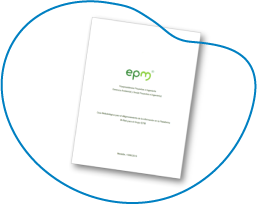
Guía de comisionamiento:
Esta guía, fue elaborada por primera vez en 2019 y cuenta con actualización de 2021 por parte de la Mesa de la plataforma M-risk. Tiene como propósito divulgar el procedimiento y los criterios para la entrega de información de trámites y compromisos ambientales de una fase a otra, garantizando la integridad y calidad de la información.
También se caracteriza por ser dinámica y tener revisiones periódicas a fin de mantener la calidad de su información.
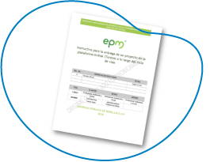
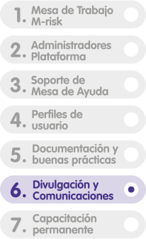
Sala de comunicaciones
En esta sala se trabaja para divulgar las novedades y actualizaciones de la plataforma en torno a criterios, actualizaciones y directrices. Los medios son correos, reuniones y boletines.
Buzón administradores plataforma M-risk
Para canalizar las comunicaciones y divulgar tips.
Fruto del compromiso con la transparencia, esta Gobernación cuenta con un departamento especializado en comunicación y abierto a la participación de la sociedad.
Su tarea es divulgar a los usuarios las actualizaciones y nuevos acuerdos en la gestión de la información de la plataforma, así como dar recomendaciones y tips de buenas prácticas. Esta socialización la realiza cada administrador, se pueden hacer reuniones masivas o a través de boletines electrónicos.
Las comunicaciones son enviadas desde el buzón <dep01980286@epm.com.co> al cual puedes escribir para aclarar inquietudes o plantear sugerencias.
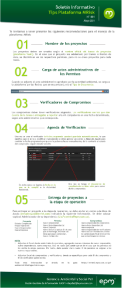
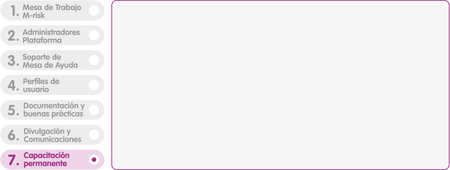
Capacitación permanente
En esta sala se trabaja en pro de entrenar a los nuevos usuarios o aquellos que lo requieran en el manejo de la plataforma M-risk. Así como aclarar dudas de casos particulares de los proyectos para el ingreso de la información.
Se tramitará a necesidad por cada administrador.
¡HAS CONSEGUIDO EL SEDUNGO SELLO!
Ahora que conoces los principales aspectos de la gestión operativa de M-risk en el Grupo EPM, tienes el contexto completo de la zona sur. Salgamos para explorar un poco más. Pasa a la siguiente página para conocer otra zona de la ciudadela.
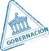
Hemos aprendido bastante por hoy ¿eh?
Para obtener el último sello y que puedas acreditarte como residente, vamos al último lugar y pongamos a prueba tus conocimientos adquiridos. ¡Vamos al parque de los retos!
Pasa a la siguiente página para continuar.
Ciudadela M-risk
Grupo EPM
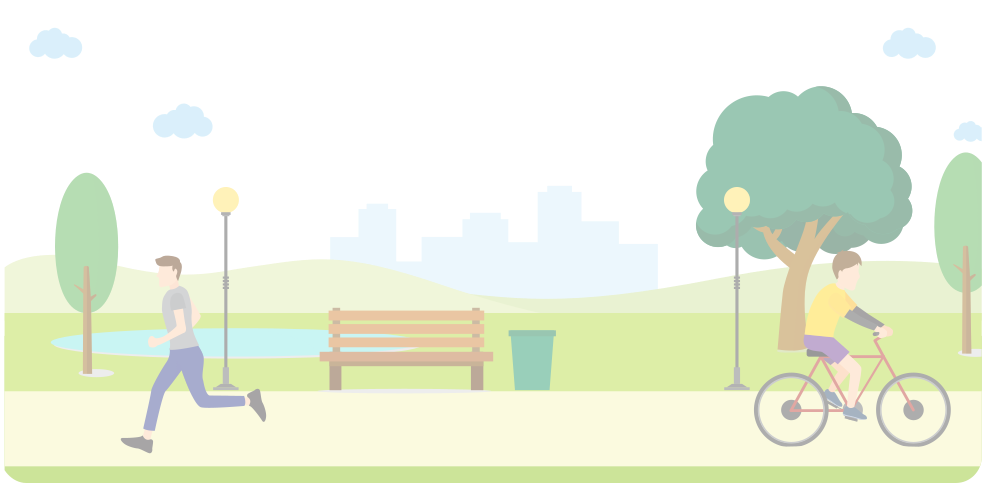
¡Felicitaciones has logrado superar el reto!
¡Oh no! Tienes un vacío conceptual, te recomiendo repasar los contenidos y
reintentar esta actividad.
1. Selecciona las respuestas correctas.
De nuestra visita al museo, ¿recuerdas cuáles fueron nuestras principales motivaciones para implementar M-risk en el Grupo EPM?
- Minimizar el riesgo de incumplimiento legal ambiental con las autoridades.
- La posibilidad de hacer menos procedimientos en los proyectos.
- Omitir la trazabilidad de las tareas.
- Evitar la generación de multas y sanciones.
- Evitar la pérdida del contrato de estabilidad jurídica.
- Pasar por alto los requerimientos de las autoridades ambientales.
2. Selecciona Sí o No para cada opción.
Cuando hablamos de la implementación de la plataforma, mencionamos los módulos que inicialmente fueron contratados con el proveedor. ¿Recuerdas cuáles fueron?
Reporte GRI Monitoreo Residuos Compromisos Permisos Auditorías e inspecciones
3. Selecciona para cada opción la respuesta correcta.
Los criterios de operación de M-risk están enmarcados por unas estrategias que son:
Grupo para la operación y sostenibilidad de la plataforma Quién gestiona por área o filial Estrategia para canalizar comunicaciones Atención de requerimientos Diligenciamiento y comisionamiento Se tramita según necesidad a cada cada administrador
4. Selecciona las respuestas correctas.
Los perfiles de usuario en la plataforma son:
- Administrador
- Gestor
- Acceso total
- Editor
- Revisor
- Colaborador
- Invitado
¡HAS CONSEGUIDO TU ÚLTIMO SELLO!
Después de todo el estudio y los aprendizajes logrados hasta ahora podemos decir que conocemos un poco más de la plataforma M-risk. ¡Muy bien! Ahora puedes acreditarte como residente y permanecer en nuestra ciudadela… Pero si quieres, puedes conseguir tu ciudadanía recorriendo la zona norte en el próximo curso, para conocer aún más de esta plataforma.
Si no has completado las actividades de evaluación puedes regresar e intentarlo. Haz click en el botón Logros para conocer tus avances y utiliza el botón Salir para terminar.